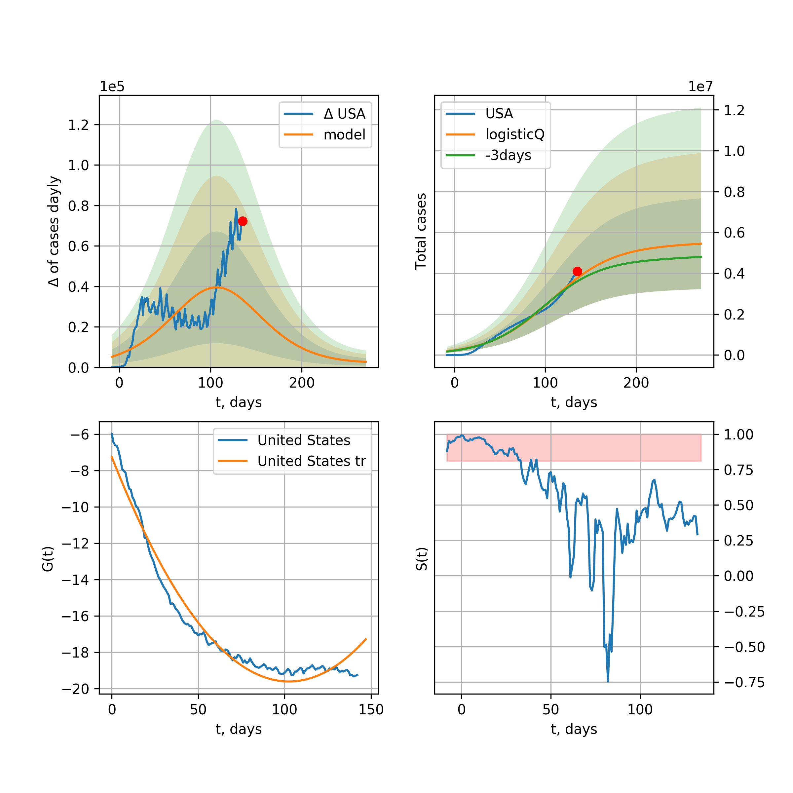
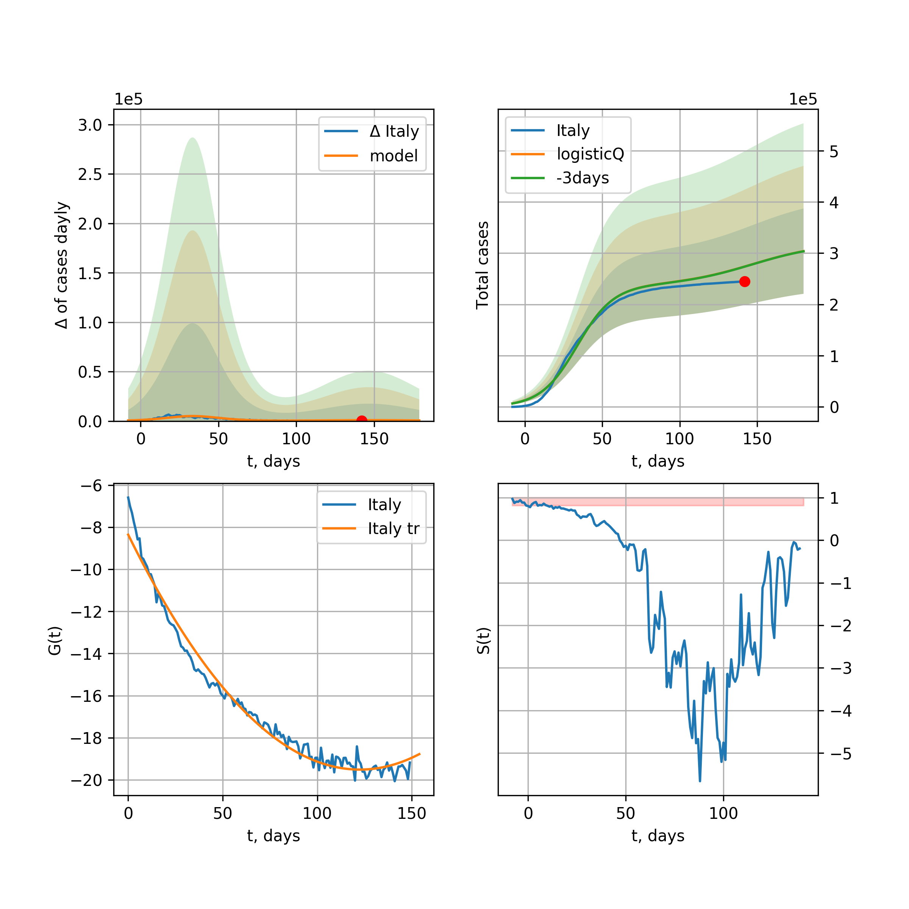
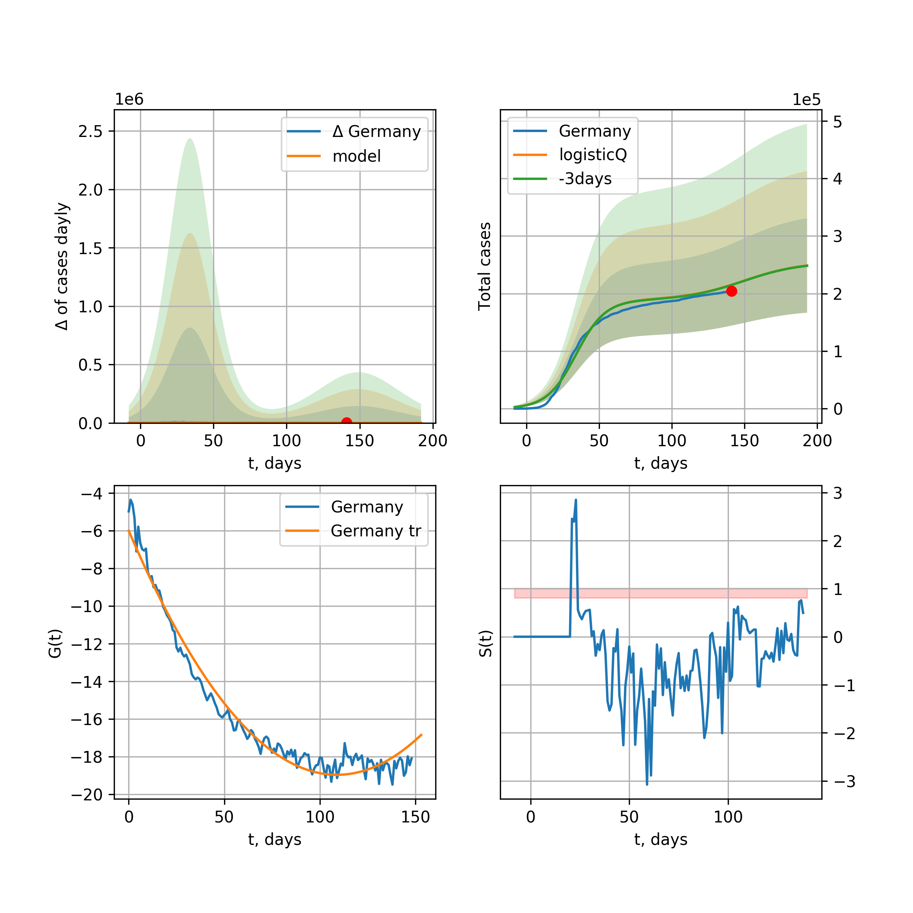
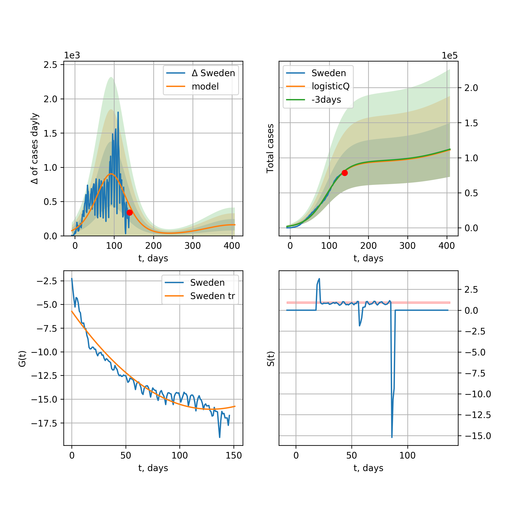
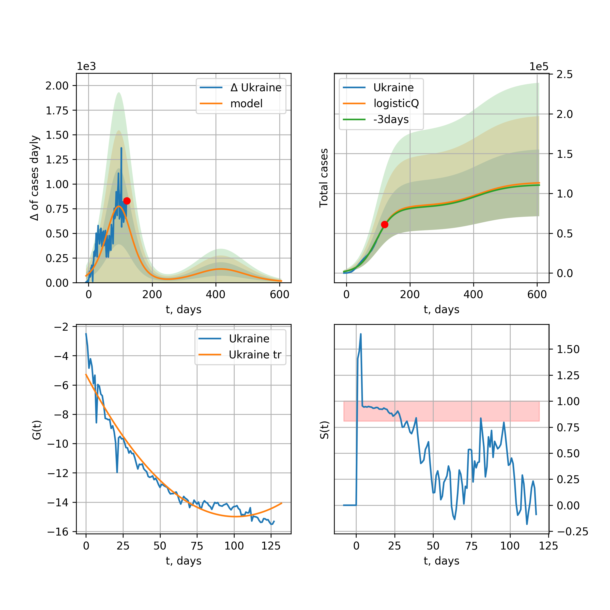
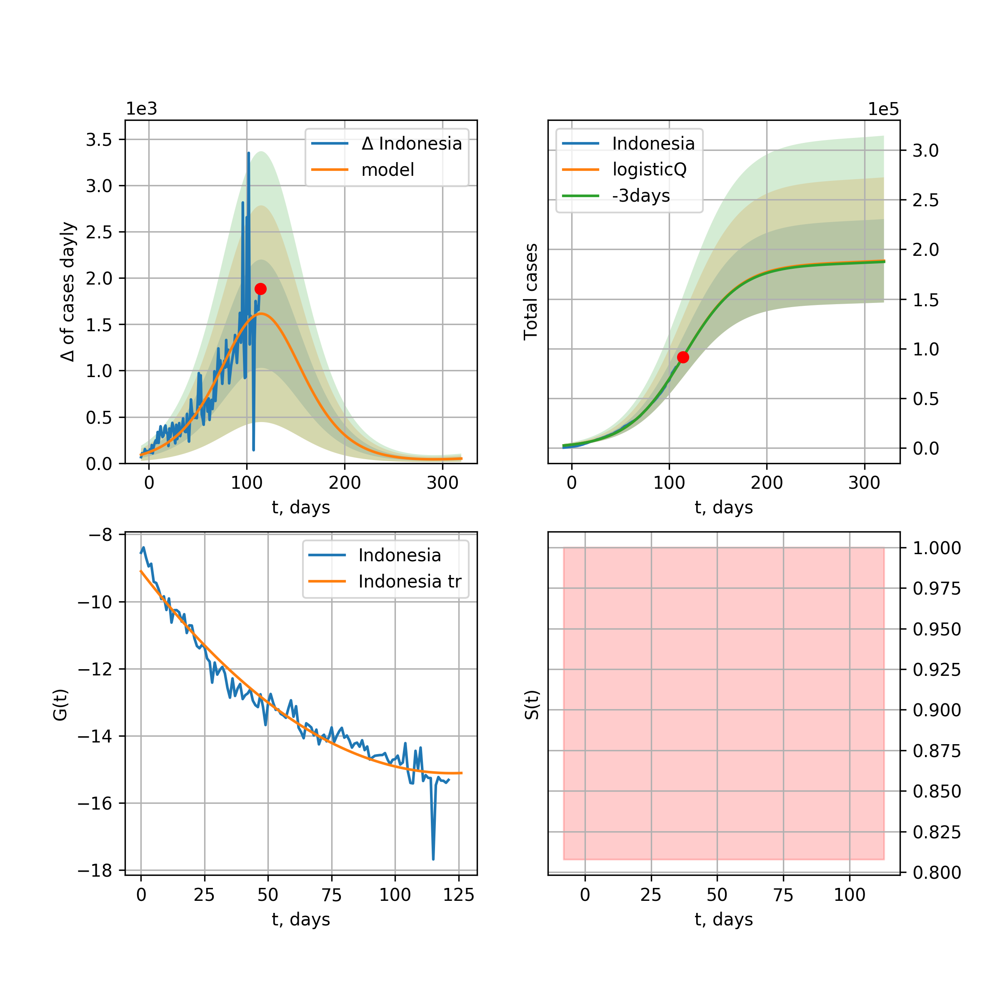
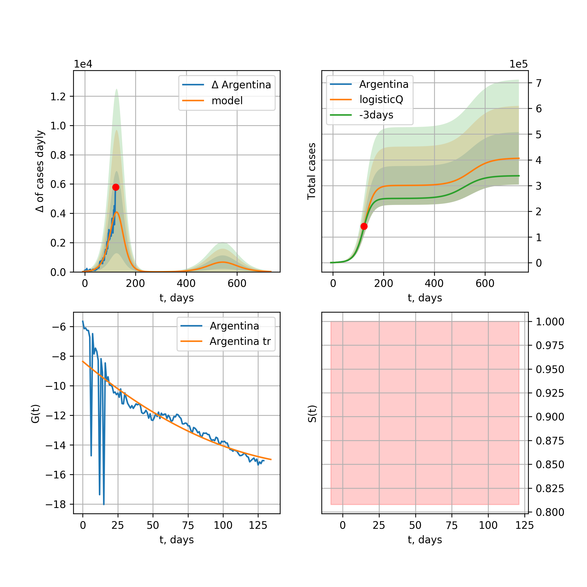

Multi-logistic model of COVID-19 dynamics
Model, code, results
Project maintained by Hosted on GitHub Pages — Theme by mattgraham
World

World data at: 2020-05-03
+3 day model MAPE: 0.048411
model: bi-logisticQ
coeffs: [ 3.29050387e+06 3.10533335e-06 7.16660238e+01 -3.97468501e+04]
S.Korea scenario coeffs: [0.35416971, 0.02606324, 4.35859408, 19.30413219]
rational stdev: 0.130504
forecast at the end of period: +314 days
deltaDaycases: 249
total cases: 4860404 ± 634304
total death: 338381 ± 132480
tri-logisticQ approximation splitting points: 26,59
trend coefficient of determination: 0.957216
intercept_: -9.890425229004336
coeffs_: [ 0. -0.26614025 0.00124975]
trend1 coefficient of determination: 0.874764
intercept_: -22.035447570025077
coeffs_: [ 0. 0.31660897 -0.00341999]
trend coefficient of determination: 0.989573
intercept_: -0.9162217534357175
coeffs_: [ 0. -0.3422213 0.00162752]
European Union

European Union data at: 2020-05-03
+3 day model MAPE: 0.016671
model: logisticQ
coeffs: [ 1.02658486e+06 1.20971736e-06 4.82684323e+01 -1.05136695e+05]
S.Korea scenario coeffs: [0.35416971, 0.02606324, 4.35859408, 19.30413219]
rational stdev: 0.427658
forecast at the end of period: +209 days
deltaDaycases: 187
total cases: 1387316 ± 593297
total death: 144135 ± 184921
trend coefficient of determination: 0.986646
intercept_: -3.019040978907894
coeffs_: [ 0. -0.32778992 0.00168023]
USA

USA data at: 2020-05-03
+3 day model MAPE: 0.048287
model: logisticQ
coeffs: [ 1.25311922e+06 1.35794057e-06 3.64385113e+01 -8.78969333e+04]
S.Korea scenario coeffs: [0.35416971, 0.02606324, 4.35859408, 19.30413219]
rational stdev: 0.424494
forecast at the end of period: +160 days
deltaDaycases: 877
total cases: 1682239 ± 714101
total death: 97126 ± 123688
trend coefficient of determination: 0.996634
intercept_: -5.564184814321171
coeffs_: [ 0. -0.37704603 0.00294968]
Spain

Spain data at: 2020-05-03
+3 day model MAPE: 0.019567
model: bi-logisticQ
coeffs: [ 6.98185915e+04 4.24218633e-06 4.98160599e+01 -6.02080767e+04]
rational stdev: 0.340968
forecast at the end of period: +62 days
deltaDaycases: 0
total cases: 250308 ± 85347
total death: 25589 ± 26175
bi-logisticQ approximation splitting point: 50
trend coefficient of determination: 0.997202
intercept_: -3.834231460165485
coeffs_: [ 0. -0.42809872 0.00374483]
trend coefficient of determination: 0.539215
intercept_: -18.023070127275613
coeffs_: [ 0. 0.12338066 -0.00163331]
Italy

Italy data at: 2020-05-03
+3 day model MAPE: 0.017859
model: logisticQ
coeffs: [ 2.07316352e+05 7.93914072e-07 2.95307182e+01 -1.38558783e+05]
S.Korea scenario coeffs: [0.35416971, 0.02606324, 4.35859408, 19.30413219]
rational stdev: 0.324358
forecast at the end of period: +118 days
deltaDaycases: 217
total cases: 276683 ± 89744
total death: 37926 ± 36904
trend coefficient of determination: 0.994144
intercept_: -7.135010944569447
coeffs_: [ 0. -0.28338926 0.00209763]
United Kingdom

United Kingdom data at: 2020-05-03
+3 day model MAPE: 0.047670
model: logisticQ
coeffs: [ 1.98165583e+05 1.79460397e-06 4.12400234e+01 -6.81486589e+04]
S.Korea scenario coeffs: [0.35416971, 0.02606324, 4.35859408, 19.30413219]
rational stdev: 0.391055
forecast at the end of period: +174 days
deltaDaycases: 155
total cases: 265798 ± 103941
total death: 40519 ± 47535
trend coefficient of determination: 0.995236
intercept_: -4.185378665530386
coeffs_: [ 0. -0.30919915 0.00200855]
France

France data at: 2020-05-03
+3 day model MAPE: 0.004879
model: logisticQ
coeffs: [ 1.69380480e+05 2.85969164e-06 3.23403575e+01 -5.26111619e+04]
S.Korea scenario coeffs: [0.35416971, 0.02606324, 4.35859408, 19.30413219]
rational stdev: 0.312231
forecast at the end of period: +128 days
deltaDaycases: 126
total cases: 227713 ± 71099
total death: 33605 ± 31477
trend coefficient of determination: 0.981867
intercept_: -5.085232232387989
coeffs_: [ 0. -0.30325992 0.00176924]
Germany

Germany data at: 2020-05-03
+3 day model MAPE: 0.013683
model: logisticQ
coeffs: [ 1.61007093e+05 1.24707198e-06 2.99549891e+01 -1.17730231e+05]
S.Korea scenario coeffs: [0.35416971, 0.02606324, 4.35859408, 19.30413219]
rational stdev: 0.372634
forecast at the end of period: +132 days
deltaDaycases: 42
total cases: 217470 ± 81036
total death: 9013 ± 10075
trend coefficient of determination: 0.993464
intercept_: -4.618486772547917
coeffs_: [ 0. -0.34281336 0.00236635]
Turkey

Turkey data at: 2020-05-03
+3 day model MAPE: 0.021411
model: logisticQ
coeffs: [ 1.29691458e+05 2.69020070e-06 2.70658577e+01 -5.65701757e+04]
S.Korea scenario coeffs: [0.35416971, 0.02606324, 4.35859408, 19.30413219]
rational stdev: 0.395042
forecast at the end of period: +126 days
deltaDaycases: 56
total cases: 174902 ± 69093
total death: 4713 ± 5585
trend coefficient of determination: 0.975975
intercept_: -3.0277403800683373
coeffs_: [ 0. -0.48835306 0.00480044]
Russia

Russia data at: 2020-05-03
+3 day model MAPE: 0.101003
model: logisticQ
coeffs: [ 1.93053644e+05 7.89661066e-06 5.11427044e+01 -1.84781584e+04]
S.Korea scenario coeffs: [0.35416971, 0.02606324, 4.35859408, 19.30413219]
rational stdev: 0.365103
forecast at the end of period: +230 days
deltaDaycases: 49
total cases: 260770 ± 95207
total death: 2478 ± 2714
trend coefficient of determination: 0.950549
intercept_: -3.7345003279418876
coeffs_: [ 0. -0.19535205 0.00026347]
Iran

Iran data at: 2020-05-03
+3 day model MAPE: 0.018372
model: bi-logisticQ
coeffs: [ 8.77340441e+04 1.06209872e-06 3.62618011e+01 -1.19113166e+05]
S.Korea scenario coeffs: [0.35, 0.5, 3, 1]
rational stdev: 0.317491
forecast at the end of period: +104 days
deltaDaycases: 39
total cases: 125187 ± 39745
total death: 7970 ± 7591
bi-logisticQ approximation splitting point: 17
trend coefficient of determination: 0.987745
intercept_: -2.720144864989817
coeffs_: [ 0. -0.61067547 0.00823538]
trend coefficient of determination: 0.984995
intercept_: -8.686261577010765
coeffs_: [ 0. -0.14829854 0.00060378]
Brazil

Brazil data at: 2020-05-03
+3 day model MAPE: 0.034834
model: logisticQ
coeffs: [ 2.53314651e+05 8.13239591e-06 5.80840326e+01 -1.17893265e+04]
S.Korea scenario coeffs: [0.35416971, 0.02606324, 4.35859408, 19.30413219]
rational stdev: 0.411568
forecast at the end of period: +279 days
deltaDaycases: 89
total cases: 341173 ± 140416
total death: 23624 ± 29168
trend coefficient of determination: 0.839210
intercept_: -3.88738723456021
coeffs_: [ 0. -0.31590656 0.00244299]
Canada

Canada data at: 2020-05-03
+3 day model MAPE: 0.049383
model: logisticQ
coeffs: [ 6.68730905e+04 1.49881068e-06 3.95636065e+01 -7.27029778e+04]
S.Korea scenario coeffs: [0.35416971, 0.02606324, 4.35859408, 19.30413219]
rational stdev: 0.401246
forecast at the end of period: +196 days
deltaDaycases: 17
total cases: 90242 ± 36209
total death: 5586 ± 6724
trend coefficient of determination: 0.985114
intercept_: -4.6129932288169595
coeffs_: [ 0. -0.27157797 0.00178022]
Belgium

Belgium data at: 2020-05-03
+3 day model MAPE: 0.011825
model: logisticQ
coeffs: [ 5.16330291e+04 1.64218839e-06 3.16962132e+01 -7.69469972e+04]
S.Korea scenario coeffs: [0.35416971, 0.02606324, 4.35859408, 19.30413219]
rational stdev: 0.347117
forecast at the end of period: +132 days
deltaDaycases: 49
total cases: 69136 ± 23998
total death: 10866 ± 11315
trend coefficient of determination: 0.978825
intercept_: -4.167074639687401
coeffs_: [ 0. -0.33591204 0.00259356]
Peru

Peru data at: 2020-05-03
+3 day model MAPE: 0.104149
model: logisticQ
coeffs: [ 9.08116650e+04 6.26909706e-06 4.91625258e+01 -1.84492509e+04]
S.Korea scenario coeffs: [0.35416971, 0.02606324, 4.35859408, 19.30413219]
rational stdev: 0.352583
forecast at the end of period: +202 days
deltaDaycases: 180
total cases: 119583 ± 42163
total death: 3348 ± 3541
trend coefficient of determination: 0.965202
intercept_: -3.51030566943487
coeffs_: [ 0. -0.30647238 0.00237392]
Netherlands

Netherlands data at: 2020-05-03
+3 day model MAPE: 0.010084
model: logisticQ
coeffs: [ 4.18592182e+04 1.64239144e-06 3.30775231e+01 -7.29779982e+04]
S.Korea scenario coeffs: [0.35416971, 0.02606324, 4.35859408, 19.30413219]
rational stdev: 0.364318
forecast at the end of period: +132 days
deltaDaycases: 51
total cases: 55805 ± 20330
total death: 6954 ± 7600
trend coefficient of determination: 0.981187
intercept_: -3.1751344626990585
coeffs_: [ 0. -0.36793108 0.00292634]
India

India data at: 2020-05-03
+3 day model MAPE: 0.108928
model: logisticQ
coeffs: [ 6.55200189e+04 3.21677975e-05 2.03682240e+01 -3.47383143e+03]
S.Korea scenario coeffs: [0.35416971, 0.02606324, 4.35859408, 19.30413219]
rational stdev: 0.117391
forecast at the end of period: +160 days
deltaDaycases: 5
total cases: 88623 ± 10403
total death: 2898 ± 1020
trend coefficient of determination: 0.975212
intercept_: -9.269605332677115
coeffs_: [ 0. -0.2368375 0.00336682]
Switzerland

Switzerland data at: 2020-05-03
+3 day model MAPE: 0.008494
model: logisticQ
coeffs: [ 2.90701878e+04 1.15265290e-06 2.52639718e+01 -1.34575942e+05]
S.Korea scenario coeffs: [0.35416971, 0.02606324, 4.35859408, 19.30413219]
rational stdev: 0.360684
forecast at the end of period: +104 days
deltaDaycases: 12
total cases: 39214 ± 14144
total death: 2310 ± 2499
trend coefficient of determination: 0.987296
intercept_: -3.3946741056707292
coeffs_: [ 0. -0.3622459 0.00267924]
Ecuador

Ecuador data at: 2020-05-03
+3 day model MAPE: 0.058014
model: logisticQ
coeffs: [ 2.89195807e+04 1.98361741e-06 2.62754665e+01 -6.23955104e+04]
S.Korea scenario coeffs: [0.35416971, 0.02606324, 4.35859408, 19.30413219]
rational stdev: 0.338796
forecast at the end of period: +132 days
deltaDaycases: 12
total cases: 38969 ± 13202
total death: 2063 ± 2096
trend coefficient of determination: 0.630900
intercept_: -6.4047367788729055
coeffs_: [ 0. -0.257061 0.00172051]
Portugal

Portugal data at: 2020-05-03
+3 day model MAPE: 0.020615
model: logisticQ
coeffs: [ 2.52500406e+04 1.25987449e-06 2.86597739e+01 -1.07513308e+05]
S.Korea scenario coeffs: [0.35416971, 0.02606324, 4.35859408, 19.30413219]
rational stdev: 0.391688
forecast at the end of period: +132 days
deltaDaycases: 9
total cases: 34055 ± 13339
total death: 1404 ± 1649
trend coefficient of determination: 0.986868
intercept_: -2.7197676275175358
coeffs_: [ 0. -0.38134 0.00306891]
Saudi Arabia

Saudi Arabia data at: 2020-05-03
+3 day model MAPE: 0.012917
model: logisticQ
coeffs: [ 3.82106627e+04 7.29993772e-04 4.72122816e+01 -1.48407040e+02]
S.Korea scenario coeffs: [0.35416971, 0.02606324, 4.35859408, 19.30413219]
rational stdev: 0.389252
forecast at the end of period: +216 days
deltaDaycases: 18
total cases: 51438 ± 20022
total death: 350 ± 408
trend coefficient of determination: 0.789881
intercept_: -4.174261164215078
coeffs_: [ 0. -0.25129374 0.00184556]
Sweden

Sweden data at: 2020-05-03
+3 day model MAPE: 0.025189
model: logisticQ
coeffs: [ 2.68632073e+04 2.02748087e-06 4.30893365e+01 -4.65241976e+04]
S.Korea scenario coeffs: [0.35416971, 0.02606324, 4.35859408, 19.30413219]
rational stdev: 0.336997
forecast at the end of period: +188 days
deltaDaycases: 24
total cases: 35837 ± 12076
total death: 4301 ± 4348
trend coefficient of determination: 0.965781
intercept_: -3.898760828735057
coeffs_: [ 0. -0.29825037 0.00235833]
Ireland

Ireland data at: 2020-05-03
+3 day model MAPE: 0.005241
model: logisticQ
coeffs: [ 2.28890869e+04 1.20635183e-04 3.42252144e+01 -1.10720101e+03]
S.Korea scenario coeffs: [0.35416971, 0.02606324, 4.35859408, 19.30413219]
rational stdev: 0.348770
forecast at the end of period: +146 days
deltaDaycases: 18
total cases: 30728 ± 10717
total death: 1861 ± 1947
trend coefficient of determination: 0.979469
intercept_: -3.5442318222512688
coeffs_: [ 0. -0.3044228 0.00217399]
Mexico

Mexico data at: 2020-05-03
+3 day model MAPE: 0.041984
model: logisticQ
coeffs: [ 4.94617177e+04 1.35910791e-05 3.91231897e+01 -7.79906228e+03]
S.Korea scenario coeffs: [0.35416971, 0.02606324, 4.35859408, 19.30413219]
rational stdev: 0.219556
forecast at the end of period: +216 days
deltaDaycases: 10
total cases: 66779 ± 14661
total death: 6128 ± 4036
trend coefficient of determination: 0.988342
intercept_: -6.534201548898565
coeffs_: [ 0. -0.2274812 0.00201362]
Singapore

Singapore data at: 2020-05-03
+3 day model MAPE: 0.018729
model: bi-logisticQ
coeffs: [ 1.95336184e+04 1.57873565e-03 8.21212048e+01 -4.41758098e+01]
S.Korea scenario coeffs: [0.35, 0.5, 4.0, 1.0]
rational stdev: 0.436429
forecast at the end of period: +104 days
deltaDaycases: 0
total cases: 19632 ± 8568
total death: 19 ± 24
bi-logisticQ approximation splitting point: 35
trend coefficient of determination: 0.914568
intercept_: -2.036640634366525
coeffs_: [ 0. -0.39517788 0.00592335]
trend coefficient of determination: 0.881761
intercept_: -10.28763492054441
coeffs_: [ 0. 0.10486401 -0.00134261]
Chile

Chile data at: 2020-05-03
+3 day model MAPE: 0.145746
model: logisticQ
coeffs: [ 2.52037495e+04 1.27075551e-06 4.33733789e+01 -7.16873488e+04]
S.Korea scenario coeffs: [0.35416971, 0.02606324, 4.35859408, 19.30413219]
rational stdev: 0.420065
forecast at the end of period: +160 days
deltaDaycases: 77
total cases: 31897 ± 13399
total death: 421 ± 530
trend coefficient of determination: 0.746320
intercept_: -4.2164668317436345
coeffs_: [ 0. -0.28532692 0.00237917]
Israel

Israel data at: 2020-05-03
+3 day model MAPE: 0.015664
model: logisticQ
coeffs: [ 1.60004022e+04 1.17006420e-06 3.53096432e+01 -1.23654301e+05]
S.Korea scenario coeffs: [0.35416971, 0.02606324, 4.35859408, 19.30413219]
rational stdev: 0.408064
forecast at the end of period: +160 days
deltaDaycases: 2
total cases: 21630 ± 8826
total death: 309 ± 378
trend coefficient of determination: 0.931257
intercept_: -3.0323053241964484
coeffs_: [ 0. -0.23167613 0.00080757]
Austria

Austria data at: 2020-05-03
+3 day model MAPE: 0.007730
model: logisticQ
coeffs: [ 1.50010489e+04 1.48473906e-06 2.31326422e+01 -1.38351658e+05]
S.Korea scenario coeffs: [0.35416971, 0.02606324, 4.35859408, 19.30413219]
rational stdev: 0.317657
forecast at the end of period: +90 days
deltaDaycases: 3
total cases: 20277 ± 6441
total death: 777 ± 740
trend coefficient of determination: 0.979646
intercept_: -2.771877439011414
coeffs_: [ 0. -0.3555554 0.00243423]
Belarus

Belarus data at: 2020-05-03
+3 day model MAPE: 0.046306
model: logisticQ
coeffs: [ 2.47956491e+04 6.85180593e-06 2.00682081e+01 -2.03328418e+04]
S.Korea scenario coeffs: [0.35416971, 0.02606324, 4.35859408, 19.30413219]
rational stdev: 0.234875
forecast at the end of period: +104 days
deltaDaycases: 31
total cases: 33124 ± 7780
total death: 196 ± 138
trend coefficient of determination: 0.974611
intercept_: -6.976141890447848
coeffs_: [ 0. -0.28458063 0.0034788 ]
Japan

Japan data at: 2020-05-03
+3 day model MAPE: 0.016416
model: logisticQ
coeffs: [ 1.48993986e+04 1.43926778e-03 1.99442848e+01 -8.47694811e+01]
S.Korea scenario coeffs: [0.35416971, 0.02606324, 4.35859408, 19.30413219]
rational stdev: 0.074329
forecast at the end of period: +104 days
deltaDaycases: 7
total cases: 20062 ± 1491
total death: 656 ± 146
trend coefficient of determination: 0.916227
intercept_: -9.956480174491325
coeffs_: [ 0. -0.00227219 -0.00199772]
Qatar

Qatar data at: 2020-05-03
+3 day model MAPE: 0.040597
model: bi-logisticQ
coeffs: [ 2.89625759e+04 1.89013403e-05 4.94457791e+01 -6.00150444e+03]
S.Korea scenario coeffs: [0.35416971, 0.02606324, 4.35859408, 19.30413219]
rational stdev: 0.306646
forecast at the end of period: +230 days
deltaDaycases: 13
total cases: 38983 ± 11954
total death: 30 ± 27
bi-logisticQ approximation splitting point: 15
trend coefficient of determination: 0.929567
intercept_: -1.9786509648817043
coeffs_: [ 0. -0.62175364 -0.00080828]
trend coefficient of determination: 0.850035
intercept_: -10.898795347071838
coeffs_: [ 0. 0.11326466 -0.00257426]
Poland

Poland data at: 2020-05-03
+3 day model MAPE: 0.029506
model: logisticQ
coeffs: [ 1.46665582e+04 1.84640015e-06 3.30979007e+01 -6.34308815e+04]
S.Korea scenario coeffs: [0.35416971, 0.02606324, 4.35859408, 19.30413219]
rational stdev: 0.361137
forecast at the end of period: +146 days
deltaDaycases: 12
total cases: 19651 ± 7096
total death: 973 ± 1054
trend coefficient of determination: 0.983738
intercept_: -2.9885198562321573
coeffs_: [ 0. -0.34328381 0.0029134 ]
UAE

UAE data at: 2020-05-03
+3 day model MAPE: 0.053201
model: logisticQ
coeffs: [ 1.78494329e+04 3.71810761e-06 1.98892521e+01 -3.21008483e+04]
S.Korea scenario coeffs: [0.35416971, 0.02606324, 4.35859408, 19.30413219]
rational stdev: 0.162171
forecast at the end of period: +90 days
deltaDaycases: 40
total cases: 23417 ± 3797
total death: 208 ± 101
trend coefficient of determination: 0.975309
intercept_: -7.757027402221018
coeffs_: [ 0. -0.21787188 0.0022353 ]
Romania

Romania data at: 2020-05-03
+3 day model MAPE: 0.034627
model: logisticQ
coeffs: [ 1.39747702e+04 1.66265731e-06 3.22129019e+01 -7.11281416e+04]
S.Korea scenario coeffs: [0.35416971, 0.02606324, 4.35859408, 19.30413219]
rational stdev: 0.341147
forecast at the end of period: +132 days
deltaDaycases: 20
total cases: 18560 ± 6331
total death: 1113 ± 1139
trend coefficient of determination: 0.984894
intercept_: -3.7871883773314785
coeffs_: [ 0. -0.30644285 0.00250706]
Ukraine

Ukraine data at: 2020-05-02
+3 day model MAPE: 0.026317
model: logisticQ
coeffs: [ 1.67937629e+04 5.63311104e-06 3.31754410e+01 -2.22196051e+04]
S.Korea scenario coeffs: [0.35416971, 0.02606324, 4.35859408, 19.30413219]
rational stdev: 0.336823
forecast at the end of period: +147 days
deltaDaycases: 23
total cases: 22356 ± 7530
total death: 546 ± 551
trend coefficient of determination: 0.939531
intercept_: -3.6656984882874184
coeffs_: [ 0. -0.35756303 0.00380992]
South_Korea

South Korea data at: 2020-05-03
+3 day model MAPE: 0.001311
model: bi-logisticQ
coeffs: [ 2.82198129e+03 1.90346316e-06 3.21304114e+01 -9.38797979e+04]
rational stdev: 0.134867
forecast at the end of period: +20 days
deltaDaycases: 0
total cases: 10722 ± 1446
total death: 250 ± 101
bi-logisticQ approximation splitting point: 25
trend coefficient of determination: 0.925965
intercept_: -5.745633553515705
coeffs_: [ 0. -0.22458651 -0.00428776]
trend coefficient of determination: 0.782245
intercept_: -11.628310159393463
coeffs_: [ 0. -0.04745466 -0.00028851]
Indonesia

Indonesia data at: 2020-05-03
+3 day model MAPE: 0.026149
model: logisticQ
coeffs: [ 1.38713505e+04 3.09077144e-05 2.12853888e+01 -3.35186891e+03]
S.Korea scenario coeffs: [0.35416971, 0.02606324, 4.35859408, 19.30413219]
rational stdev: 0.048261
forecast at the end of period: +118 days
deltaDaycases: 10
total cases: 18571 ± 896
total death: 1402 ± 202
trend coefficient of determination: 0.972265
intercept_: -8.534106336151195
coeffs_: [ 0. -0.14542938 0.00097159]
Denmark

Denmark data at: 2020-05-03
+3 day model MAPE: 0.031366
model: bi-logisticQ
coeffs: [ 8.44056965e+03 1.07498638e-06 3.33713730e+01 -1.28786767e+05]
S.Korea scenario coeffs: [0.35416971, 0.02606324, 4.35859408, 19.30413219]
rational stdev: 0.310853
forecast at the end of period: +146 days
deltaDaycases: 3
total cases: 12242 ± 3805
total death: 622 ± 580
bi-logisticQ approximation splitting point: 18
trend coefficient of determination: 0.963211
intercept_: -1.9308894789691964
coeffs_: [ 0. -0.26605777 -0.01390014]
trend coefficient of determination: 0.956809
intercept_: -7.309243702799585
coeffs_: [ 0. -0.11741603 0.00029576]
Serbia

Serbia data at: 2020-05-03
+3 day model MAPE: 0.025496
model: logisticQ
coeffs: [ 9.97979067e+03 3.49800572e-06 2.84675690e+01 -4.15466684e+04]
S.Korea scenario coeffs: [0.35416971, 0.02606324, 4.35859408, 19.30413219]
rational stdev: 0.274888
forecast at the end of period: +146 days
deltaDaycases: 1
total cases: 13489 ± 3708
total death: 275 ± 226
trend coefficient of determination: 0.965274
intercept_: -3.9205344956372254
coeffs_: [ 0. -0.28183885 0.0020509 ]
Philippines

Philippines data at: 2020-05-03
+3 day model MAPE: 0.061831
model: logisticQ
coeffs: [ 9.11367238e+03 1.39983284e-06 2.35363562e+01 -8.76558425e+04]
S.Korea scenario coeffs: [0.35416971, 0.02606324, 4.35859408, 19.30413219]
rational stdev: 0.353738
forecast at the end of period: +104 days
deltaDaycases: 10
total cases: 12167 ± 4304
total death: 800 ± 848
trend coefficient of determination: 0.944578
intercept_: -4.383589148851517
coeffs_: [ 0. -0.34805832 0.00366595]
Norway

Norway data at: 2020-05-03
+3 day model MAPE: 0.009243
model: logisticQ
coeffs: [ 7.65535026e+03 1.14350570e-06 2.34886912e+01 -1.15075903e+05]
S.Korea scenario coeffs: [0.35416971, 0.02606324, 4.35859408, 19.30413219]
rational stdev: 0.332770
forecast at the end of period: +104 days
deltaDaycases: 3
total cases: 10318 ± 3433
total death: 277 ± 276
trend coefficient of determination: 0.969579
intercept_: -3.1675371767231484
coeffs_: [ 0. -0.35713667 0.00296685]
Czechia

Czechia data at: 2020-05-03
+3 day model MAPE: 0.014556
model: logisticQ
coeffs: [ 7.55792756e+03 1.22507112e-06 2.42722978e+01 -1.21779984e+05]
S.Korea scenario coeffs: [0.35416971, 0.02606324, 4.35859408, 19.30413219]
rational stdev: 0.342649
forecast at the end of period: +104 days
deltaDaycases: 3
total cases: 10186 ± 3490
total death: 324 ± 333
trend coefficient of determination: 0.905894
intercept_: -3.9444669488986825
coeffs_: [ 0. -0.28505693 0.0019478 ]
Colombia

Colombia data at: 2020-05-03
+3 day model MAPE: 0.102152
model: logisticQ
coeffs: [ 1.12176181e+04 3.33345968e-06 3.91522987e+01 -2.71625533e+04]
S.Korea scenario coeffs: [0.35416971, 0.02606324, 4.35859408, 19.30413219]
rational stdev: 0.342369
forecast at the end of period: +160 days
deltaDaycases: 25
total cases: 14529 ± 4974
total death: 644 ± 661
trend coefficient of determination: 0.962430
intercept_: -3.2888854033082424
coeffs_: [ 0. -0.37006418 0.0040736 ]
Australia

Australia data at: 2020-05-03
+3 day model MAPE: 0.003963
model: logisticQ
coeffs: [ 6.64231289e+03 2.95394136e-06 1.80925107e+01 -7.79831411e+04]
S.Korea scenario coeffs: [0.35416971, 0.02606324, 4.35859408, 19.30413219]
rational stdev: 0.192534
forecast at the end of period: +48 days
deltaDaycases: 15
total cases: 8859 ± 1705
total death: 123 ± 71
trend coefficient of determination: 0.973623
intercept_: -4.760250995050343
coeffs_: [ 0. -0.26528982 0.00143072]
Malaysia

Malaysia data at: 2020-05-03
+3 day model MAPE: 0.015360
model: logisticQ
coeffs: [ 6.07477166e+03 2.10076032e-06 2.74836505e+01 -6.31850086e+04]
S.Korea scenario coeffs: [0.35416971, 0.02606324, 4.35859408, 19.30413219]
rational stdev: 0.332558
forecast at the end of period: +104 days
deltaDaycases: 7
total cases: 8105 ± 2695
total death: 135 ± 134
trend coefficient of determination: 0.836424
intercept_: -4.338678572498425
coeffs_: [ 0. -0.25845162 0.00183016]
Egypt

Egypt data at: 2020-05-03
+3 day model MAPE: 0.071500
model: logisticQ
coeffs: [ 1.01127967e+04 2.08669661e-05 3.26819933e+01 -4.38101439e+03]
S.Korea scenario coeffs: [0.35416971, 0.02606324, 4.35859408, 19.30413219]
rational stdev: 0.111363
forecast at the end of period: +202 days
deltaDaycases: 1
total cases: 13655 ± 1520
total death: 906 ± 302
trend coefficient of determination: 0.930099
intercept_: -7.553582863277702
coeffs_: [ 0. -0.13238802 0.00079979]
Finland

Finland data at: 2020-05-03
+3 day model MAPE: 0.022937
model: logisticQ
coeffs: [ 5.63737504e+03 1.49366272e-06 3.82881250e+01 -6.86877949e+04]
S.Korea scenario coeffs: [0.35416971, 0.02606324, 4.35859408, 19.30413219]
rational stdev: 0.381808
forecast at the end of period: +174 days
deltaDaycases: 3
total cases: 7573 ± 2891
total death: 331 ± 379
trend coefficient of determination: 0.880953
intercept_: -3.3093550197801296
coeffs_: [ 0. -0.24547519 0.00159479]
Morocco

Morocco data at: 2020-05-03
+3 day model MAPE: 0.009571
model: logisticQ
coeffs: [ 5.62596103e+03 8.29575829e-06 2.67013676e+01 -1.48476633e+04]
S.Korea scenario coeffs: [0.35416971, 0.02606324, 4.35859408, 19.30413219]
rational stdev: 0.241062
forecast at the end of period: +132 days
deltaDaycases: 3
total cases: 7560 ± 1822
total death: 268 ± 193
trend coefficient of determination: 0.964795
intercept_: -4.902984913787877
coeffs_: [ 0. -0.25662902 0.0022566 ]
Argentina

Argentina data at: 2020-05-03
+3 day model MAPE: 0.044277
model: logisticQ
coeffs: [ 5.62838469e+03 1.53286431e-06 2.60706021e+01 -6.18230673e+04]
S.Korea scenario coeffs: [0.35416971, 0.02606324, 4.35859408, 19.30413219]
rational stdev: 0.271689
forecast at the end of period: +146 days
deltaDaycases: 2
total cases: 7565 ± 2055
total death: 389 ± 317
trend coefficient of determination: 0.355818
intercept_: -6.738044558232971
coeffs_: [ 0. -0.24915985 0.00313213]
Algeria

Algeria data at: 2020-05-03
+3 day model MAPE: 0.075843
model: logisticQ
coeffs: [ 5.29349994e+03 1.65862296e-06 2.57818054e+01 -5.75361101e+04]
S.Korea scenario coeffs: [0.35416971, 0.02606324, 4.35859408, 19.30413219]
rational stdev: 0.256011
forecast at the end of period: +160 days
deltaDaycases: 1
total cases: 7140 ± 1828
total death: 738 ± 566
trend coefficient of determination: 0.929196
intercept_: -6.216061285098135
coeffs_: [ 0. -0.22436824 0.00231348]
Luxembourg

Luxembourg data at: 2020-05-03
+3 day model MAPE: 0.009545
model: logisticQ
coeffs: [ 3.67675788e+03 1.31242699e-06 -1.38144701e+05 9.22393649e+00]
rational stdev: 0.264565
forecast at the end of period: +76 days
deltaDaycases: 0
total cases: 3676 ± 972
total death: 92 ± 73
trend coefficient of determination: 0.945969
intercept_: -4.853664831896074
coeffs_: [ 0. -0.38421118 0.00416607]
Thailand

Thailand data at: 2020-05-03
+3 day model MAPE: 0.005051
model: Richards
coeffs: [ 2.95726516e+03 1.54944015e+01 -3.62385025e+01 8.24074116e-03]
rational stdev: 0.093277
forecast at the end of period: +20 days
deltaDaycases: 0
total cases: 2955 ± 275
total death: 53 ± 14
trend coefficient of determination: 0.854513
intercept: -1.267482
slope: -0.115773
Hungary

Hungary data at: 2020-05-03
+3 day model MAPE: 0.019748
model: logisticQ
coeffs: [ 3.47133933e+03 2.81384852e-06 3.37158806e+01 -4.03052062e+04]
S.Korea scenario coeffs: [0.35416971, 0.02606324, 4.35859408, 19.30413219]
rational stdev: 0.304736
forecast at the end of period: +146 days
deltaDaycases: 3
total cases: 4630 ± 1411
total death: 535 ± 489
trend coefficient of determination: 0.975767
intercept_: -3.281963423331929
coeffs_: [ 0. -0.25717274 0.00190131]
Greece

Greece data at: 2020-05-03
+3 day model MAPE: 0.011491
model: logisticQ
coeffs: [ 2.57761173e+03 1.42477520e-06 2.30126905e+01 -9.04726099e+04]
S.Korea scenario coeffs: [0.35416971, 0.02606324, 4.35859408, 19.30413219]
rational stdev: 0.280281
forecast at the end of period: +104 days
deltaDaycases: 1
total cases: 3471 ± 973
total death: 190 ± 159
trend coefficient of determination: 0.935521
intercept_: -3.281783661273689
coeffs_: [ 0. -0.30779163 0.00241916]
Iraq

Iraq data at: 2020-05-03
+3 day model MAPE: 0.025026
model: bi-logisticQ
coeffs: [-8.89916450e+02 2.11263337e-03 2.36771953e+01 -1.90995956e+02]
rational stdev: 0.059650
forecast at the end of period: +132 days
deltaDaycases: 0
total cases: 2230 ± 133
total death: 94 ± 16
bi-logisticQ approximation splitting point: 32
trend coefficient of determination: 0.943011
intercept_: -6.485709272215987
coeffs_: [ 0. -0.09183938 -0.00203399]
trend coefficient of determination: 0.175126
intercept_: -14.041886575403751
coeffs_: [ 0. 0.11820645 -0.00117434]
Croatia

Croatia data at: 2020-05-03
+3 day model MAPE: 0.007769
model: logisticQ
coeffs: [ 2.07785486e+03 1.36573804e-06 2.62428618e+01 -1.09171479e+05]
S.Korea scenario coeffs: [0.35416971, 0.02606324, 4.35859408, 19.30413219]
rational stdev: 0.328462
forecast at the end of period: +118 days
deltaDaycases: 0
total cases: 2805 ± 921
total death: 105 ± 103
trend coefficient of determination: 0.980625
intercept_: -2.32902943702124
coeffs_: [ 0. -0.26741749 0.00148447]
Iceland

Iceland data at: 2020-05-03
+3 day model MAPE: 0.000057
model: logisticQ
coeffs: [ 1.80197149e+03 9.96104010e-06 1.33195769e+01 -1.77869168e+04]
rational stdev: 0.068534
forecast at the end of period: +48 days
deltaDaycases: 0
total cases: 1801 ± 123
total death: 10 ± 2
trend coefficient of determination: 0.933479
intercept_: -5.942688663228007
coeffs_: [ 0. -0.14824663 -0.00062247]
Estonia

Estonia data at: 2020-05-03
+3 day model MAPE: 0.006164
model: logisticQ
coeffs: [ 1.70581686e+03 2.58419541e-06 1.27351366e+01 -4.91551366e+04]
S.Korea scenario coeffs: [0.0875, 0.5, 4.0, 1]
rational stdev: 0.139526
forecast at the end of period: +34 days
deltaDaycases: 1
total cases: 1832 ± 255
total death: 59 ± 24
trend coefficient of determination: 0.882822
intercept_: -6.478643314408964
coeffs_: [ 0. -0.18427441 0.00104502]
Bulgaria

Bulgaria data at: 2020-05-03
+3 day model MAPE: 0.018061
model: logisticQ
coeffs: [ 2.74854933e+03 3.19504510e-06 3.53669911e+01 -2.24934445e+04]
S.Korea scenario coeffs: [0.35416971, 0.02606324, 4.35859408, 19.30413219]
rational stdev: 0.183833
forecast at the end of period: +209 days
deltaDaycases: 1
total cases: 3692 ± 678
total death: 166 ± 91
trend coefficient of determination: 0.892064
intercept_: -5.901294754755523
coeffs_: [ 0. -0.20269197 0.00207336]
New Zealand

New Zealand data at: 2020-05-03
+3 day model MAPE: 0.003600
model: logisticQ
coeffs: [ 1.46062759e+03 4.39784982e-06 2.48215358e+01 -5.71302960e+04]
S.Korea scenario coeffs: [0.35416971, 0.02606324, 4.35859408, 19.30413219]
rational stdev: 0.413192
forecast at the end of period: +76 days
deltaDaycases: 2
total cases: 1956 ± 808
total death: 26 ± 32
trend coefficient of determination: 0.844062
intercept_: -4.14563628153758
coeffs_: [ 0. -0.11585537 -0.00088986]
Slovenia

Slovenia data at: 2020-05-03
+3 day model MAPE: 0.009419
model: bi-logisticQ
coeffs: [ 1.18409013e+03 1.06163423e-06 1.88176904e+01 -1.50646877e+05]
S.Korea scenario coeffs: [0.35416971, 0.02606324, 4.35859408, 19.30413219]
rational stdev: 0.226938
forecast at the end of period: +90 days
deltaDaycases: 0
total cases: 1817 ± 412
total death: 121 ± 82
bi-logisticQ approximation splitting point: 10
trend coefficient of determination: 0.968209
intercept_: -2.53431844604435
coeffs_: [ 0. -0.45029183 -0.00732028]
trend coefficient of determination: 0.914571
intercept_: -6.6323033089836105
coeffs_: [ 0. -0.12607353 0.00018555]
Slovakia

Slovakia data at: 2020-05-03
+3 day model MAPE: 0.028294
model: logisticQ
coeffs: [ 1.53384898e+03 2.89096920e-04 2.43096589e+01 -4.20265883e+02]
S.Korea scenario coeffs: [0.35416971, 0.02606324, 4.35859408, 19.30413219]
rational stdev: 0.282764
forecast at the end of period: +132 days
deltaDaycases: 0
total cases: 2071 ± 585
total death: 35 ± 29
trend coefficient of determination: 0.902539
intercept_: -3.376402987673967
coeffs_: [ 0. -0.2686785 0.00173494]
Lithuania

Lithuania data at: 2020-05-02
+3 day model MAPE: 0.017466
model: logisticQ
coeffs: [ 1.38563065e+03 9.38888758e-07 1.82396902e+01 -1.51084520e+05]
S.Korea scenario coeffs: [0.35416971, 0.02606324, 4.35859408, 19.30413219]
rational stdev: 0.361430
forecast at the end of period: +77 days
deltaDaycases: 1
total cases: 1855 ± 670
total death: 60 ± 65
trend coefficient of determination: 0.969650
intercept_: -1.4296975819855833
coeffs_: [ 0. -0.43124353 0.00445141]
Latvia

Latvia data at: 2020-05-03
+3 day model MAPE: 0.024021
model: logisticQ
coeffs: [ 8.33983903e+02 7.77209821e-07 1.77947729e+01 -1.73184396e+05]
S.Korea scenario coeffs: [0.35416971, 0.02606324, 4.35859408, 19.30413219]
rational stdev: 0.296647
forecast at the end of period: +62 days
deltaDaycases: 1
total cases: 1101 ± 326
total death: 20 ± 17
trend coefficient of determination: 0.741620
intercept_: -3.5511113584329737
coeffs_: [ 0. -0.28626847 0.00261448]
Cyprus

Cyprus data at: 2020-05-03
+3 day model MAPE: 0.008586
model: logisticQ
coeffs: [ 8.56623966e+02 3.87480776e-06 1.57966896e+01 -4.01834815e+04]
S.Korea scenario coeffs: [0.35416971, 0.02606324, 4.35859408, 19.30413219]
rational stdev: 0.182057
forecast at the end of period: +90 days
deltaDaycases: 0
total cases: 1158 ± 210
total death: 19 ± 10
trend coefficient of determination: 0.820642
intercept_: -4.315861021251641
coeffs_: [ 0. -0.24995641 0.00204486]
Malta

Malta data at: 2020-05-03
+3 day model MAPE: 0.009608
model: Richards
coeffs: [4.69570643e+02 1.05546010e-01 2.31467900e+01 1.64079378e+00]
rational stdev: 0.256067
forecast at the end of period: +20 days
deltaDaycases: 0
total cases: 469 ± 120
total death: 3 ± 2
trend coefficient of determination: 0.877240
intercept: -6.119948
slope: -0.201972
Sri Lanka

Sri Lanka data at: 2020-05-03
+3 day model MAPE: 0.062838
model: bi-logisticQ
coeffs: [ 5.18033887e+02 4.95277952e-03 3.80543331e+01 -3.87676409e+01]
S.Korea scenario coeffs: [0.35416971, 0.02606324, 4.35859408, 19.30413219]
rational stdev: 0.261390
forecast at the end of period: +216 days
deltaDaycases: 0
total cases: 917 ± 239
total death: 8 ± 6
bi-logisticQ approximation splitting point: 35
trend coefficient of determination: 0.700900
intercept_: -1.7291427146735243
coeffs_: [ 0. -0.62059696 0.01251448]
trend coefficient of determination: 0.356970
intercept_: -45.35102800084556
coeffs_: [ 0. 1.68688112 -0.01943157]
References
- Worldometers COVID-19 Coronavirus Pandemic
- Su COVID-19 susijusi gyventojų ir verslo statistika
- Bi-logistic growth
- Least squares
- scikit-learn
- scipy.org
- European Centre for Disease Prevention and Control An agency of the European Union
- Aaron Miller, Mac Josh Reandelar, Kimberly Fasciglione, Violeta Roumenova, Yan Li, Gonzalo H Otazu, Correlation between universal BCG vaccination policy and reduced morbidity and mortality for COVID-19: an epidemiological study, https://doi.org/10.1101/2020.03.24.20042937